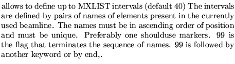
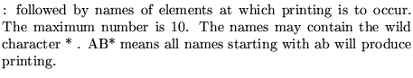
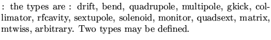

Input formatParameter definitions
PRINt selection
keyword
name(i) as many as needed
99
end,
The different keywords are : interval, name, type
Interval 
name 
type 
Examples
The example comes from demo12.
* The following is to illustrate the use of the PRINT * operation print interval m1 m2 99, name qf* 99, type bend 99, end machine : inthis case the print request of -1 supersedes the * request found in the previous print command (the same would * be true if if the request were 0 : print everywhere) 1 1.1 0.1 0 0.025 1 1 0 0 0 0 0 0 0 0 -1, machine: in this case the printing occurs as requested by the * previous print command 1 1.1 0.1 0 0.025 1 1 0 0 0 0 0 0 0 0 1,